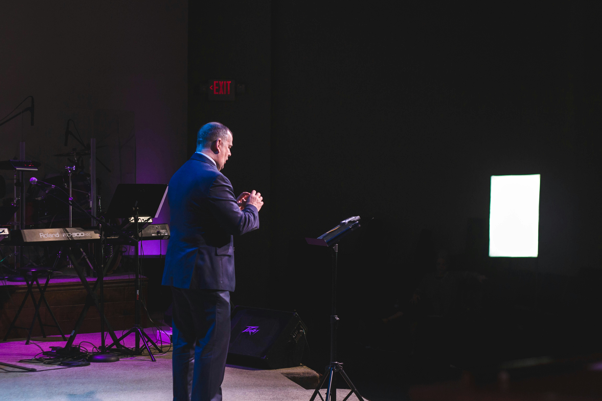

Our Story
A Movement of Faith & Healing
Grace Abound Ministry was born out of a divine vision to see lives transformed by the undeniable power of God's Word.
Founded in 2010, our church began as a small gathering of believers hungry for a deeper encounter with God. What started in a living room has grown into a vibrant community of thousands, all united by one purpose: to experience and share the healing love of Jesus Christ.
We believe that God's Word is alive, active, and powerful enough to heal any disease, restore any relationship, and break every chain. Our services are dynamic, our worship is passionate, and our message is unwavering—Jesus is the healer of our world.
Read Our Beliefs →
Humble beginnings to a global movement